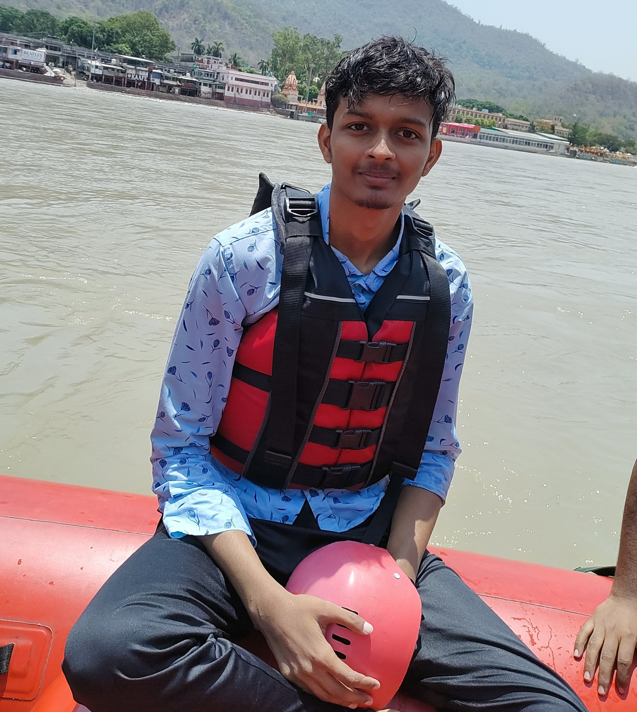

I have done my class 10 from Army Pulic School Lucknow. I scored 79.4% in class 10. At that time I realised that I have to improve myself cause I was not good in studies at that time so for me my class 10 was really a very important phase as from then I started learning and improving myself.
I have done my class 12 from that same school. I scored 90% in class 12 and I become a Head Cyber Council of my school, at that time I noticed some improvement in myself althought they were very small but that feeling was really special for me and now I want to feel it once again that's why I want to improve myself to feel that moment once again.
HTML, CSS ,JS ,BSICS OF MERN , C AND C++
Team work, Patient, Hardworker, quick learner and Leadership